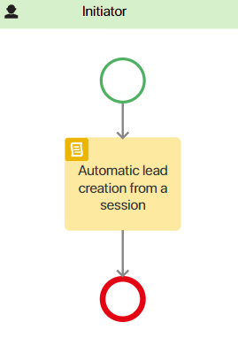
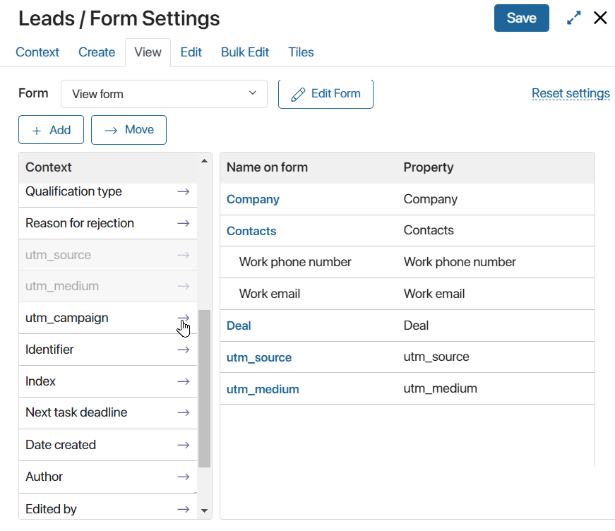
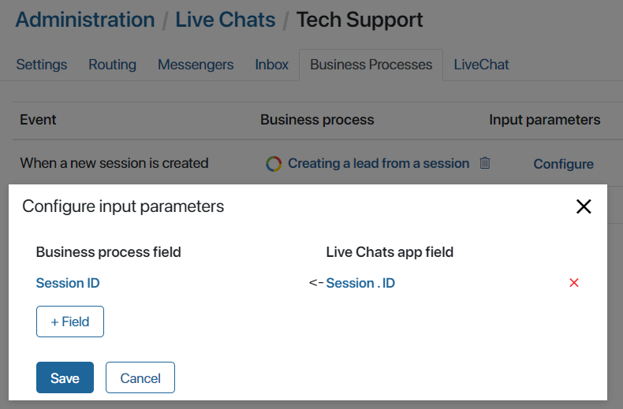

When creating a new session with a user who contacted via the LiveChat, the following UTM tags are automatically captured in BRIX:
- utm_source. The source of the transition.;
- utm_medium. Traffic type;
- utm_campaign. The name of the ad campaign;
- utm_content. Additional information that helps to distinguish ads;
- utm_term. Key phrase.
With these tags, you can track where the most potential customers come from and what topics are most in demand. Captured tags are displayed on the session page on the right sidebar of the chat.
You can also pass tag values to a business process. To do this, use Script. For example, you can set up a process where UTM tag values will be output to the lead page after the lead is automatically created. Read more about scripting in the BRIX TS SDK in the Live Chats workspace.
Example of using UTM tags in a business process
Let’s consider an example where when creating a new session with a user from LiveChat in BRIX, a new lead will be automatically created using a business process. At the same time, captured UTM tags will be displayed on the lead page.
- Go to the Leads app in the CRM workspace.
- Click the gear icon next to the app name and select Business Processes.
- In the upper right corner, click +Process. In the opened window, enter the name of the process, for example, Creating a lead from a session.
- In the opened business process designer, open the Context tab and add a variable with the following parameters:
- Display name*. Lead.
- Property Name*. Opportunity.
- Type*. App, One.
- App*. Leads.
- Then create another variable:
- Display name*. Session ID.
- Property Name*. Session_id.
- Type*. String.
- Go to the Scripts tab and add the following code:
async function createOpportunity(): Promise<void> {
if(Context.data.session_id) {
const session = await System.lines.sessions.search().where(item => item.__id.eq(Context.data.session_id!)).first();
if(session && session.data._clients && session.data._clients.length > 0) {
const client = await System.lines.clients.search().where(item => item.__id.eq(session.data._clients![0].id)).first();
if(client) {
if(client.data._applicationItem) {
const new_opportunity = await Context.fields.opportunity.app.create();
new_opportunity.data._contacts = [client.data._applicationItem as any];
new_opportunity.data.utm_source = (<any>client.data._extraData).utm_source;
new_opportunity.data.utm_medium = (<any>client.data._extraData).utm_medium;
new_opportunity.data.utm_campaign = (<any>client.data._extraData).utm_campaign;
await new_opportunity.save();
Context.data.opportunity = new_opportunity;
}
}
}
}
}
- Go to the Flow chart tab and place the Script element on the modeling field. Double-click on it and in the opened settings window in the Function field specify the
createOpportunityfunction created on the Scripts tab. Click Save.
In our example, only the Script element is sufficient for automatic lead generation and UTM tagging, so the process flow chart can look like this:

- On the top panel of the business process designer, click Save, and then Publish.
- Bring up the properties for UTM tags in the view page of the lead. To do this, click the gear icon to the right of the Leads app name and select Form Settings. In the opened window, click the View tab and bring the properties for UTM tags located in the left panel to the form:

- Save the form and go to the Administration > Live Chat workspace.
- Open the Business Processes tab. Opposite When a new session is created, click Select and specify the previously created process Creating a lead from a session.
- In the Input parameters column, click Configure. In the opened window, click +Field and select the Session ID property created in step 5. In the Live Chats app field column, specify Session > ID.

- Click Save. After closing the window, save the changes made to the Business Processes tab.
After that, when creating a new session with a user from LiveChat, a new lead will be created in the CRM workspace, and its page will display the captured UTM tags.